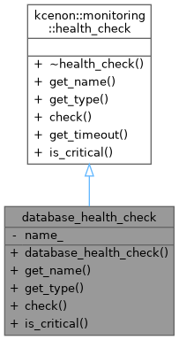
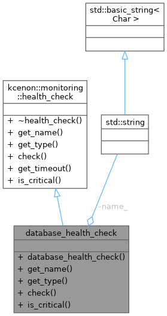
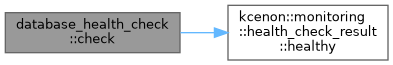

Public Member Functions | |
| database_health_check (const std::string &name) | |
| std::string | get_name () const override |
| Get the human-readable name of this health check. | |
| health_check_type | get_type () const override |
| Get the type of this health check (liveness, readiness, or startup). | |
| health_check_result | check () override |
| Execute the health check and return the result. | |
| bool | is_critical () const override |
| Whether this check is critical for overall system health. | |
 Public Member Functions inherited from kcenon::monitoring::health_check Public Member Functions inherited from kcenon::monitoring::health_check | |
| virtual | ~health_check ()=default |
| virtual std::chrono::milliseconds | get_timeout () const |
| Get the maximum time allowed for this check to complete. | |
Private Attributes | |
| std::string | name_ |
Detailed Description
- Examples
- production_monitoring_example.cpp.
Definition at line 45 of file production_monitoring_example.cpp.
Constructor & Destructor Documentation
◆ database_health_check()
|
inlineexplicit |
- Examples
- production_monitoring_example.cpp.
Definition at line 50 of file production_monitoring_example.cpp.
Member Function Documentation
◆ check()
|
inlineoverridevirtual |
Execute the health check and return the result.
- Returns
- A health_check_result indicating the current health status
Implements kcenon::monitoring::health_check.
- Examples
- production_monitoring_example.cpp.
Definition at line 60 of file production_monitoring_example.cpp.
References kcenon::monitoring::health_check_result::healthy().

◆ get_name()
|
inlineoverridevirtual |
Get the human-readable name of this health check.
- Returns
- The health check name
Implements kcenon::monitoring::health_check.
- Examples
- production_monitoring_example.cpp.
Definition at line 52 of file production_monitoring_example.cpp.
References name_.
◆ get_type()
|
inlineoverridevirtual |
Get the type of this health check (liveness, readiness, or startup).
- Returns
- The health check type
Implements kcenon::monitoring::health_check.
- Examples
- production_monitoring_example.cpp.
Definition at line 56 of file production_monitoring_example.cpp.
◆ is_critical()
|
inlineoverridevirtual |
Whether this check is critical for overall system health.
- Returns
- true if failure of this check should mark the system as unhealthy (default: false)
Reimplemented from kcenon::monitoring::health_check.
- Examples
- production_monitoring_example.cpp.
Definition at line 65 of file production_monitoring_example.cpp.
Member Data Documentation
◆ name_
|
private |
- Examples
- production_monitoring_example.cpp.
Definition at line 47 of file production_monitoring_example.cpp.
Referenced by get_name().
The documentation for this class was generated from the following file:
- examples/production_monitoring_example.cpp